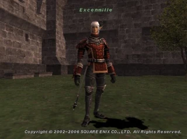
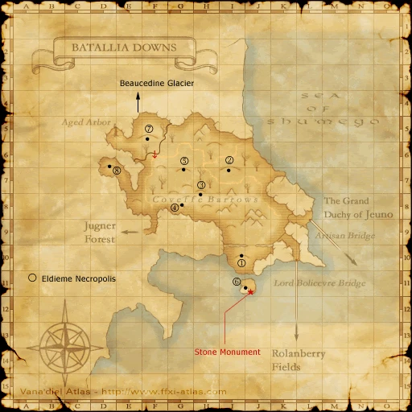

Before you begin
- Complete Blood of Heroes and wait until the next Vana’diel day.
- For the intended story order, complete Darkness Descends and reach Adieu, Lilisette.
- Keep an inventory slot free for the reward.
Starting point
Rongelouts N Distaud · Southern San d'Oria (S) · I-9
People in this mission



Walkthrough
- Speak to Rongelouts N Distaud. Walk into Xarcabard (S) from Beaucedine Glacier (S) for the scene.
- Examine, in order: Backfilled Pit F-8, Compact Footprint at the southern H-8 edge, Sunken Footprint near H-6/H-7, then Compact Footprint again.
- Walk into Batallia Downs (S) from Beaucedine Glacier (S). Examine Fresh Snowmelt beside the H-5 Cavernous Maw for its scene.
- Prepare, then examine Fresh Snowmelt again to fight Menechme alongside Excenmille. After victory, re-examine it for the reward and transport to present-day Batallia Downs.
Battle and progress notes
- The specified zone-line entries matter; direct teleport arrival does not replace them. Face of the Future is automatically accepted after the ending.
- The base quest omits the intended Adieu mission gate, and its predecessor’s timer assignment needs correction; follow the intended order above.
Completion and reward
What this opens
Area maps
Open a zone below, then select a map to enlarge it. Match the named floors and grid coordinates in the steps; these are reference area maps, not a live position tracker.
Southern San d'Oria (S)


Beaucedine Glacier (S)

Xarcabard (S)

Batallia Downs (S)


Batallia Downs



Zone guides
References
Steps are an original summary of the linked walkthrough and reviewed source. Other servers’ bonus rewards are not included. How to read requirements, waits and battlefield notes.